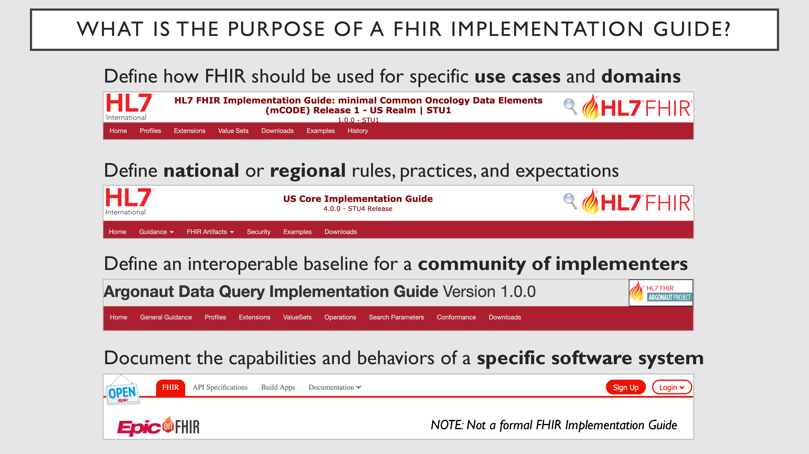
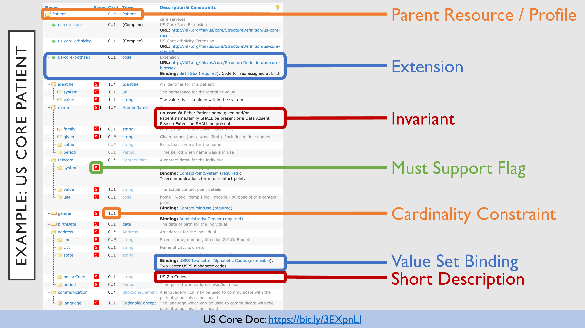
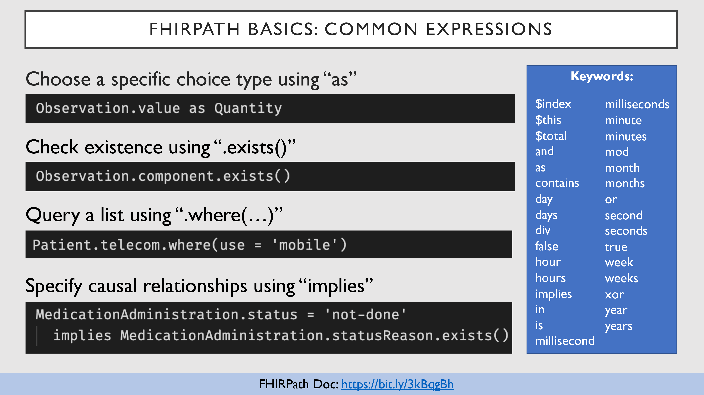
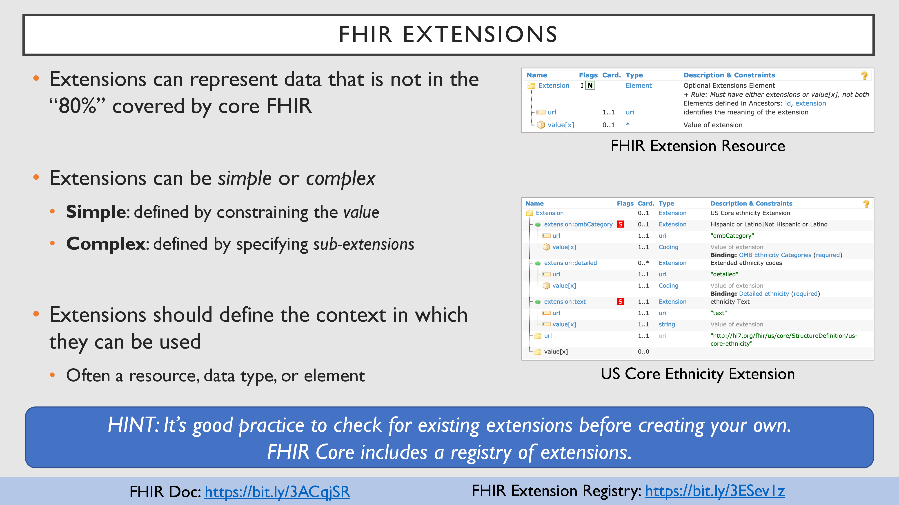
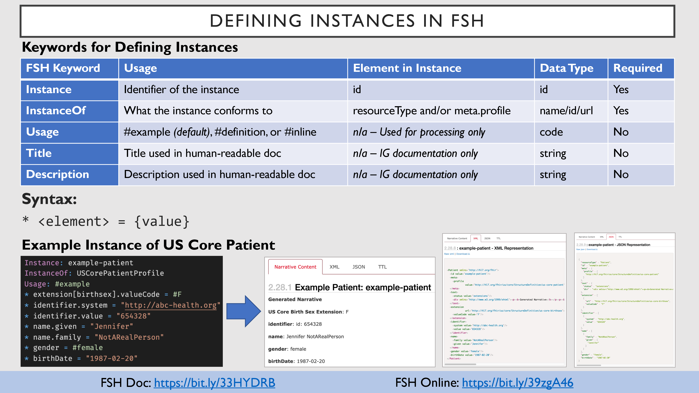

1 1 |
Welcome to FHIR for IG Authors! The notes on the side are here to explain things in more detail or provide additional information and tips not found on the slides.
Ready to dive in?
|
 2 2 |
Implementation Guides (IG) describe how to use FHIR for specific use cases around the exchange and use of health data.
IGs might specify:
- How to formally represent specific data
- How to safely (and meaningfully) exchange that data
- How to search, update, or use that data
- Actors and roles in the domain the IG addresses
- Relationships to other IGs and health standards
- and more...
|
| 3 |
IGs can have a variety of different scopes and purposes.
- The mCODE IG is an example of a use case-specific IG.
- US Core is an example of a national/regional IG.
- Argonaut is an example of a community of implementers coming together to define how to exchange data.
- An EHR vendor might also publish an IG showing what their software supports (but so far this is rare).
|
 4 4 |
There are many different reasons to build a FHIR IG:
- When you need to define details regarding data exchange for a specific use case or domain
- When you want to leverage the ecosystem of tooling built around FHIR
- IG Authoring: IG Publisher, SUSHI, Forge, Trifolia-on-FHIR, ...
- Validators: FHIR Validator, Online FHIR Validator, Inferno Validator, ...
- Testing: Inferno, Touchstone, ...
- Servers and Open-Source Implementations: Servers WIKI, Open-Source Implementations WIKI
- When you want to develop in the open and receive ongoing feedback
- HL7 ballot cycles allow for formal review and HL7 publication
- Community involvement and feedback results in a better IG
- Community investment and improvement increases changes of adoption
Image credit: Tenor (https://tenor.com/view/under-construction90s-90s-under-construction-oldies-gif-20223524)
|
 5 5 |
There are a few ways to build IGs:
- Hand-editing the XML (example) or JSON (example): tedious and error-prone (not recommended)
- Editing spreadsheets (documentation): currently being phased out (not recommended)
- Using a graphical interface / wizard (Forge, Trifolia-on-FHIR): appeals to authors who want to be guided through the process
- Command-driven (FHIR Shorthand): appeals to authors who prefer a more direct approach
|
 6 6 |
Creating an Implementation Guide requires a lot of knowledge, collaboration, and agility.
FHIR IGs go through many iterations before publication.
|
 7 7 |
IG authors often have to respond quickly to an ever-changing (and challenging) landscape.
Having the right skills and the right tools can make a big difference.
|
 8 8 |
FHIR Shorthand (FSH, pronounced "fish") was created to support the authoring agility that most IG developers need.
- FSH is a text-driven approach to IG authoring.
- FSH definitions can be easily searched and manipulated (e.g., refactored) using modern text editors.
- FSH files work well with version control, branch management, and collaborative workflows (e.g., GitHub pull requests).
- FSH tooling follows best practices for defining conformance resources and improves consistency across projects.
- FSH allows authors to focus on the use case rather than the specific details of authoring FHIR JSON/XML.
- FSH is an official HL7 Mixed Normative / Trial Use specification.
- FSH has a vibrant community and FSH tooling is available for free via a friendly open source license.
- FSH supports and encourages heavy punning along aquatic themes. Just try it and you'll be hooked.
|
 9 9 |
Fully building an IG with FSH requires two primary tools:
- SUSHI: Compiles FSH into formal FHIR definitions and assembles IG sources for the IG Publisher
- IG Publisher: Uses the provided sources to build a human-readable IG and machine-processable package
Authors can invoke SUSHI directly to get fast feedback and compilation for their FSH files without needing to run the heavy-weight IG Publisher.
When authors run the IG Publisher, it will automatically invoke SUSHI as part of its process if it detects an input/fsh folder.
NOTE: See that link at the bottom? These slides contain many links to relevant documentation and examples. In the interest of preserving space, all links use the bit.ly link shortening service. For your convenience, each link is also repeated in the notes.
Links:
|
 10 10 |
Most FSH definitions have the same basic structure:
- First you declare what your item is (e.g., Profile) and give it a name (e.g., CancerPatient)
- Then you provide additional metadata information via common keywords (e.g., Id, Title, Description)
- Finally, you specify a set of rules that defines meaningful content for the item
Keywords and rule types vary depending on the type of item you are defining, but where possible, FSH tries to maintain as much consistency as possible between item types.
The * prefix for each rule is inspired by bulleted Markdown lists.
Links:
|
 11 11 |
These examples show how the declaration, keywords, and rules relate to actual FHIR Shorthand definitions. At this point, you're not expected to understand the definitions, but this gives you an idea of what real FHIR Shorthand looks like!
Links:
|
 12 12 |
Now that we've briefly covered the high-level mechanics and structure of FSH, let's jump into the details!
FHIR profiles specify how a resource can be used for a specific use case. Authors typically define:
- Metadata (including narrative text and meaningful flags) to explain aspects of the profile
- Constraints that narrow broad requirements into more specific requirements
- Extensions that allow for additional information that doesn't fit into any of the core resource elements
On the right-hand side, we have an example of the US Core Patient profile. This example demonstrates how a profile is represented as human-readable documentation in an IG.
Links:
|
| 13 |
Taking a closer look at the US Core Patient profile, we can see that it demonstrates a number of core profiling approaches:
- A base resource, in this case,
Patient
- Extensions for race, ethnicity, and birthsex (since these are not part of the core Patient resource)
- Complex rules, called invariants, that describe non-trivial rule logic (see
us-core-8)
- Indications of what fields must be supported (note the red
S flags)
- Requirements that
identifier, name, and gender must be provided (e.g., cardinality constraints)
- A binding on
address.state indicating that values must come from a set of two-letter USPS state codes
- Short human-readable element descriptions, such as the hint that
postalCode should be a US zip code
Links:
|
 14 14 |
To define a profile in FSH, you must specify the Profile name and its Parent. You may specify Id, Title, and Description (all of which are recommended).
The example demonstrates a profile for representing body weight as an Observation. The FSH definition is on the left and the resulting IG documentation is on the right. Note the following rules that Observations must follow to conform to this profile:
- The
code must be LOINC 29463-7 (Body weight)
- The multi-type value (
value[x]) may only be a Quantity
- The quantity value (
valueQuantity) may only use units from the BodyWeightUnits value set
Links:
|
 15 15 |
The previous slide, and many of the following slides, includes a link to the example on FSH Online.
FSH Online is an online "playground" (or aquarium?) that allows you to play with FSH. FSH Online has several important features:
- Convert FSH to FHIR JSON
- Convert FHIR JSON to FSH
- Browse a curated set of examples
- Easily create shareable links to your own FSH code
FSH Online is a great tool for learning, sharing, experimenting, and debugging FSH!
Links:
|
 16 16 |
Back to the slide we just reviewed...
Note the FSH Online link on the bottom right (and below this paragraph). This link will load the example in FSH Online so that you can try converting it to FHIR JSON.
Go ahead and try it out. If you're feeling brave, make a few edits to the FSH and see how it affects the FHIR JSON.
Links:
|
 17 17 |
Profiles support many different kinds of rules for constraining the core resource definition to match your use case. In the following slides, we'll cover several of these types of rules.
Cardinality rules specify how many times a certain element can occur. Authors do this by specifying a min and a max:
- Optional elements have a min of
0
- Required elements have a min of
1 or greater
- Singular elements have a max of
1
- Repeatable elements have a max of
2 or greater (but usually * to allow infinite repetitions)
- Prohibited elements have a min of
0 and a max of 0
Note that you can only tighten cardinality (to a smaller range); it cannot be loosened. For example, if an element is 0..1 in a base FHIR resource, you can't make it a list (0..*) in a profile, because that would be loosening (or widening) the constraint.
Links:
|
 18 18 |
In FSH, authors use cardinality rules to narrow cardinality. Cardinality rules indicate the target element plus the min and/or max occurrences.
Authors can specify:
- both min and max (e.g.,
1..1)
- or min only (e.g.,
1..)
- or max only (
..1)
It is considered best practice to specify both min and max so that the full cardinality is in view when reviewing the FSH.
In the example, the Patient resource has been profiled to require a value for gender.
Since this is the first slide describing rule syntax, note the following:
- Most rules start with an element, represented by
<element> in the syntax description
- The
<element> can be a top-level or nested element path (see FSH Paths)
- Many syntax examples use "FSH math", where an element from the parent + some FSH code = the resulting element in the profile
Links:
|
 19 19 |
IG authors can apply special flags to elements to give them additional meaning.
In FSH, authors use flag rules to apply these flags. Flag rules indicate the target element and one or more flags (MS, SU, ?!, N, TU, D).
In the example, the Patient resource has been profiled to indicate that gender must be supported (MS) and should be included in resource summaries (SU).
Note that gender is already flagged with SU, so marking it SU in FSH is redundant (but harmless). Normally you would not do this, but we wanted to demonstrate applying multiple flags at once.
Links:
|
 20 20 |
Marking an element as Must Support (MS) is different than making it required (1..1).
- Required (
1..1) elements must be present in the data
- Must Support (
MS) elements may be absent (unless also 1..1), but systems must be able to process these elements in a meaningful way
The core FHIR spec does not define Must Support in much detail. Each IG is expected to provide the meaning of Must Support for its own use case.
Links:
|
 21 21 |
For example, US Core documents how responders and requestors should support elements marked as Must Support.
IGs that extend or use US Core profiles inherit Must Support elements and their meanings from those US Core profiles. A profile cannot remove the Must Support flag from any element in a parent profile.
Links:
|
 22 22 |
IG authors can constrain (or restrict) element types in several ways:
- For an element supporting multiple types, a profile can constrain the element to a subset of those types or a single type
- These elements are called "choice types" and their name always ends in
[x]
- Any element type can always be constrained to a more specific profile (or set of profiles) of the type
Reference and canonical types are not considered choice types, but can refer to multiple target types
Reference/canonical types can constrain their target types to a subset, single target type, and/or profile(s) of target types
Links:
|
 23 23 |
In FSH, authors use type rules to constrain an element's types. Type rules indicate the target element, the only keyword, and one or more allowed types separated by the or keyword.
In the example on the left, an Observation's effective[x] element is constrained to only allow the dateTime or Period types.
In the example on the right, a Patient's address element is constrained to only allow a specific profile of Address.
Links:
|
 24 24 |
Constraining Reference and canonical types in FSH is very similar to constraining other types. The primary difference is that the target types are inside the parentheses of Reference() or Canonical() keywords.
In the example on the left, an Observation's performer element is constrained to only allow a reference to a Patient.
In the example on the right, a PlanDefinition's activity.definitionCanonical element is constrained to only allow a canonical for an ActivityDefinition or PlanDefinition.
Links:
|
 25 25 |
Sometime a profile requires that an element have a specific value. For example, a profile for Body Weight might indicate that the Observation's code must be LOINC 29463-7.
There are two different flavors of matching available to IG authors:
- pattern[x] defines a basic pattern to be matched, but allows for additional data as well
- fixed[x] requires an exact match, allowing for no variation at all
In many cases, especially with complex data types, a pattern[x] match is preferred, as fixed[x] can be overly prescriptive.
Best practice for requiring a match on Coding or CodeableConcept is to:
- use
pattern[x] matching to allow for additional codes and/or text
- do not specify
display or text in the required pattern
Links:
|
 26 26 |
In FSH, authors use assignment rules to require particular element values. Assignment rules indicate the target element, the = symbol (surrounded by spaces), the required value, and an optional (exactly) keyword.
- FSH defaults all matches to use
pattern[x] matching
- Add
(exactly) to the end of an assignment rule to specify fixed[x] matching
In the example, the Observation's code must be LOINC 29463-7 (matching by pattern).
Note the syntax for a code: system#code. This syntax is used throughout FSH. In cases where a display should be specified, the syntax is system#code "display".
Links:
|
 27 27 |
The previous slide's example specified the code as http://loinc.org#29463-7. Many authors, however, will use an alias for common URLs.
An alias allows authors to define a short global name that can be used as a shortcut for a URL. This has several advantages:
- Aliases are easier for authors to write
- Aliases are easier for reviewers to read
- Aliases reduce errors since authors aren't retyping long URLS again and again
- Consistent use of aliases makes it easier to see what systems (or other external resources) an IG uses
In FSH, authors specify aliases using the Alias: keyword, followed by the alias name, an = symbol (surrounded by spaces), and a URL or URN.
- Aliases can only be used to refer to URLs; they cannot be used as shortcuts for arbitrary words or phrases
- Aliases are global within a FSH project, so you can put them anywhere you want
- Many authors prefer to put all of their aliases in a single file (or a few intentionally organized files)
- If an alias name starts with
$, SUSHI will do additional error checking to guard against typos when referencing aliases
- Nothing else in FSH is allowed to have a
$ at the beginning, so this is a clear signal something is an alias
- But... you are not required to start alias names with
$ (although it is recommended)
Links:
|
 28 28 |
Before moving on to the next type of constraint, it's important to have a basic understanding of terminology in FHIR.
FHIR defines several data types for representing coded values:
- code is a simple string and doesn't allow for the system, version, or display. It is usually used when the system can be implied.
- Coding represents a single code with a system, code, optional version, and optional display.
- CodeableConcept supports a grouping of
Codings, allowing for multiple translations of the same concept, or representations of the same concept from multiple code systems. CodeableConcept also supports an overall text property.
FHIR defines several resources related to terminology, but two of the most important are Code System and Value Set:
Links:
|
 29 29 |
Sometimes profiles require a specific value for a given element, but other times they may require a value from a set of allowed codes for a given element.
Profiles indicate a set of potential coded values for an element by binding that element to a value set. The strength of the binding indicates how strict the requirement is (from "you must use one of these codes" to "these codes are just examples; use whatever you want").
Links:
|
 30 30 |
In FSH, authors use binding rules to bind elements to value sets. Binding rules indicate the target element, the from keyword, a value set URI/id/name, and an optional strength (in parentheses).
- If no strength is provided, the binding defaults to
required strength
- Supported strength qualifiers are
(required), (extensible), (preferred), and (example)
NOTE: This example, as well as future examples, uses full URLS for value sets and code systems in order to be as descriptive as possible. In actual practice, however, the use of aliases (or local names, when applicable) is preferred.
Links:
|
 31 31 |
Profiles use extensions to support data that doesn't fit into any of the existing elements in the parent resource.
Authors can:
- use an extension defined as part of FHIR core (e.g., patient-birthPlace)
- use an extension defined in another IG (e.g., us-core-race)
- create their own extension definition (covered later)
Extensions can be specified:
- at the top-level of the resource, to be interpreted in the context of the whole resource
- on an element, to be interpreted in the context of that element
If an extension changes the meaning of the resource (or element it is attached to), then it is called a modifier extension.
- For example, a
just-kidding extension (which, if true, means you should ignore the resource) is a (silly) modifier extension
- Modifier extensions can only be carried in the
modifierExtension array
- If a receiver does not understand an extension in the
modifierExtension array, it is not safe to process it
Adding extensions is still constraining the resource, because it specifies that an extension (or modifierExtension) element contains a more specific instance of Extension.
Links:
|
 32 32 |
In FSH, authors use contains rules to add extensions to a profile. Contains rules specify the target element, the contains keyword, an extension URL/id/name, the named keyword, a local name to refer to the extension, a cardinality (min...max), and optional flags.
In the example, the Patient resource has been extended to support the patient-birthPlace extension.
- The extension is optional since it is specified with cardinality
0..1
- Implementations must be able to support this extension since it is marked
MS
- Further rules can refer to the extension as
extension[birthPlace] since it is named birthPlace
Behind the scenes, SUSHI adds extensions by "slicing" an extension array. We'll get to slicing soon, but first, we need to cover a few more basics.
Links:
|
 33 33 |
Profiles and extensions are represented in FHIR using the StructureDefinition resource.
- FSH does not define keywords for every single element in a
StructureDefinition.
- Sometimes authors need to modify an element in
StructureDefinition that is not accessible via a FSH keyword.
In FSH, authors use caret rules to directly modify the contents of the StructureDefinition. You can recognize caret rules by a path that starts with ^, indicating you are popping into the StructureDefinition context.
In the example:
- The image on the left shows a subset of elements defined in the
StructureDefinition resource.
- The FSH snippet in the middle shows several caret rules that assign values to these elements.
- The FHIR JSON on the top-right shows how these caret rules affect the profile's
StructureDefinition.
- The image on the bottom-right shows how the IG documentation displays these values to the user.
Links:
|
 34 34 |
Inside a StructureDefinition, every resource/profile element (e.g., name, gender) is represented by an ElementDefinition.
- FSH does not define keywords for every single element in a
ElementDefinition.
- Sometimes authors need to modify an element in
ElementDefinition that is not accessible via a FSH keyword.
In FSH, authors also use caret rules to directly modify the contents of an ElementDefinition. In this case, the caret rule starts by indicating the target profile element, and then uses a caret path to indicate the ElementDefinition element to modify.
NOTE: The first element definition in profiles and extensions is always the self (or root) element. It does not pertain to an element of the profile, but rather to the profile itself. In FSH, you refer to the self element by using the dot (.) character alone.
In the example:
- The image on the left shows a subset of elements defined in the
ElementDefinition resource.
- The top set of images shows how to set the
name element's short and definition values, to provide additional human-readable documentation about the name element.
- The bottom set of images shows how to set a profile's self element's
short and definition values. These values are used as documentation of the profile when the profile is referred to by another profile.
Links:
|
 35 35 |
Slicing is one of the most complicated aspects of profile development in FHIR, but... it is necessary.
Slicing allows you to split a list of items into smaller sub-lists of those items. This is helpful because it allows you to apply different constraints to each sub-list (i.e., each slice).
- Real-world example: Splitting a master grocery list into produce, meat, and dairy sub-lists.
- The sub-lists may be a single item or could be multiple items.
In FHIR, slices (or sub-lists) must be mutually exclusive. An item cannot fit into more than one sub-list.
- Real-world example: Your grocery list can't define both "pork" and "breakfast" sub-lists, because where would bacon go?
- If the slicing is "open", then it is OK to have items that don't fit into any slices.
In the example:
- US Core Blood Pressure slices
Observation.component to define the systolic and diastolic components
- Note that additional elements are allowed, because the slicing is open
- US Core Practitioner slices
Practitioner.identifier to specify an NPI identifier
- Note that NPI can be anywhere in the identifier array, because the slicing is unordered
- mCODE TNM Clinical Stage Group slices
Observation.hasMember to indicate the primary tumor, regional nodes, and distant metastases categories.
NOTE: We've described slicing as splitting up a list, but slicing is also used to split a choice type into separate elements for each choice. For example, this would allow you to put different constraints on valueQuantity than valueCodeableConcept.
Links:
|
 36 36 |
Implementing slicing in FHIR can be done in three basic steps. The first step is to define the slicing logic.
The slicing.discriminator is used to determine what slice an item belongs to.
- The
slicing.discriminator.path indicates the element that is used to determining the slice membership
- The
slicing.discriminator.type indicates how to use that element to determine slice membership
value: match if the value is exactly the same as the value in the slicepattern: match if the value fits the pattern in the sliceexists: match based on the presence or absence of the elementtype: match if the element has the same type as the element in the sliceprofile: match if the element has the same profile as the element in the slice
In FSH, authors specify the slicing logic using caret rules to set values on an element's ElementDefinition.slicing object.
In the example, a blood pressure profile slices the component array. It specifies that, for each item in the array:
- Look at the item's
code element
- Look at each slice definition's
code element
- If the item's code value matches a slice's code pattern, the item belongs in the slice
Note the additional slicing logic that is defined:
slicing.rules indicates if non-match values are allowed anywhere (open), allowed only at the end (openAtEnd), or prohibited (closed)slicing.ordered indicates if the items in the array must match the order that the slices are defined in the profileslicing.description provides a human-readable description of how slice membership is determined
Links:
|
 37 37 |
After establishing the slicing logic, the next step is to identify the slices.
- What slices do you want to define?
- How do you want to name them?
- How many occurrences should each slice allow (or require)?
In FSH, authors identify slices (and their cardinalities) using contains rules. When using contains rules for slicing, authors specify the element to be sliced, the contains keyword, and then one or more slice name / cardinality pairs (separated by the and keyword).
Continuing with the example from the previous slide, the component element is sliced into two slices:
- a required
systolic slice, and
- a required
diastolic slice
Links:
|
 38 38 |
After establishing the slicing logic and identifying the slices, the last step is to define each slice.
The most important aspect of defining slices is to ensure that they are constrained in a way that allows the discriminator to work. The type of constraint that is needed depends on the discriminator type:
value: assign a fixed value or binding at the discriminator pathpattern: assign a pattern value or binding at the discriminator pathexists: require (min >= 1) or prohibit (0..0) the element at the discriminator pathtype: constrain the element type at the discriminator pathprofile: constrain the element type's profile at the discriminator path
In addition to defining constraints to satisfy the discriminator, you may apply other constraints as well.
In FSH, authors refer to a specific slice by adding the slice name, surrounded by square brackets ([ ]), after the element name. The actual constraints are applied the same way as would be done on any element.
Continuing with the blood pressure profile example, the component's systolic slice has been constrained so that:
- its
code must match (by pattern) LOINC 8480-6 (satisfying the code-based discriminator)
- its value can only be a
Quantity
- its value must use UCUM units
mm[Hg]
A similar constraint should be added for the diastolic slice (with a different code), but that is not shown on the slide.
And that... is how you slice in FHIR!
Links:
|
 39 39 |
Now that you're an expert in slicing, it's time to move on to the next tricky topic: invariants. But before we do, we must first gain a basic understanding of FHIRPath.
FHIRPath provides a way to navigate paths in FHIR data and extract information from them. It pops up in a few places:
- Defining slice discriminators (via a simple subset of FHIRPath)
- Defining invariants (a special type of constraint, to be discussed next)
- Defining search parameters (more specifically, what data should be matched on)
Learning about FHIRPath can be confusing, because it is actually covered in two specifications:
Links:
|
 40 40 |
FHIRPath navigation is fairly simple:
- Refer to an element by its name
- Refer to nested elements by using a dot-separated path (e.g.,
parent.child.grandchild)
- Use a few special keywords and methods for advanced navigation (see next slide)
The result of a FHIRPath navigation is always a list of values:
- a single-item list when navigating an element path with a singular value
- a multi-item list when navigating an element path with multiple values
- a multi-item list when navigating an element path that branches to multiple values
The example shows how FHIRPath extracts values when paths refer to multi-item and or nested arrays.
In the third example, FHIRPath iterates through the name objects, collecting the given values in each one and concatenating them into a single flat list.
Links:
|
| 41 |
The FHIRPath specification defines a number of keywords and functions. Here we call out a few of the most used ones:
- FHIRPath does not refer to choice elements the same way as FHIR JSON/XML serialization or FHIR Shorthand. This is a very common mistake for authors using FHIRPath.
Observation.value[x] is NOT valid FHIRPathObservation.valueQuantity is NOT valid FHIRPath- Instead, use
Observation.value or Observation.value as Quantity
- The
.exists() function determines if a path has any values or not.
- The
.where(...) function allows for querying during navigation. Use and/or to combine criteria.
- The
implies operator allows authors to say "if X is true, then check that Y is also true" (i.e., X implies Y).
| X |
Y |
X implies Y |
| true |
true |
true |
| true |
false |
false |
| false |
true |
true |
| false |
false |
true |
NOTE: If the path before implies is false, then the overall statement is true, since it has nothing to say about it.
Links:
|
 42 42 |
The FHIR specification defines several additional functions not found in the core FHIRPath specification. This slide calls out a few of the more useful functions:
- The
extension(...) function is a shortcut for navigating extension paths.
- The same can be accomplished via
extension.where(url = 'http://example.org/my/extension/url').
- The
resolve() function follows references, allowing the path to continue into the referenced object.
- The
conformsTo(...) function checks if the element at the path conforms to a specific profile.
- Asserting profile conformance is a difficult task; some servers may not support it.
- The
memberOf(...) function checks if the concept at the path is in the specified value set.
- When defining constraints, using a value set
binding is preferred over using the memberOf FHIRPath function.
NOTE: Not all FHIRPath implementations support every function (whether core or FHIR-specific).
Links:
|
 43 43 |
Since FHIRPath can be complex, it's important to test any FHIRPath you use in an IG.
Neither the FHIRPath.js Test App nor the IG Publisher / Validator provide complete implementations of FHIRPath. In addition, they've both been found to have bugs in their implementations. If you think your FHIRPath is correct, but it behaves unexpectedly under test, it may be an issue w/ the test applications!
Links:
|
 44 44 |
FHIRPath is the primary mechanism for defining logical constraints in FHIR invariants.
Invariants are typically considered a last resort when a constraint can't be expressed via other approaches.
- For example, invariants are the only way to define constraints that involve multiple elements.
Invariants can also be used to express a "soft" constraint, resulting in a warning rather than an error.
In the first example, an invariant has been defined on Observation:
- If
component and hasMember are both empty, then a dataAbsentReason or value must be present.
In the second example, an invariant has been defined on Patient.contact:
- At least one of
name, telecom, address, or organization must be present.
Links:
|
 45 45 |
To define an invariant in FSH, you must specify the Invariant identifier, its Severity, and its human-readable Description. You should also specify a FHIRPath Expression. You may also specify an XPath expression, but the FHIRPath Expression is preferred.
To apply an invariant in FSH, specify an obeys rule.
- Top-level invariants have no element path. The rule starts with the keyword
obeys, followed by one or more invariants.
- Element-level invariants first specify the element path, then the keyword
obeys, followed by one or more invariants.
- To apply multiple invariants, separate each invariant name using the
and keyword.
In the example, which is inspired by US Core, the Patient.contact must have a name, telecom, address, and/or organization.
Links:
|
| 46 |
The FHIR core spec aims to cover 80% of interoperability needs (see 80/20 rule). Authors define and use extensions to cover the remaining 20%.
Extensions can be simple or complex:
- Simple extensions have only a value
- Complex extensions have multiple sub-extensions (each of which can be simple or complex)
- An extension cannot have both a top-level value AND sub-extensions
Extensions should define the context in which they can be used. For example:
- US Core Race Extension can only be used on
Patient, Person, Practitioner, and RelatedPerson
- US Core Direct Email Extension can only be used on
ContactPoint
- AllergyIntolerance Certainty Extension can only be used on
AllergyIntolerance.reaction
Reduce, Reuse, Recycle: Check FHIR Core and related IGs for existing extensions before creating your own!
Links:
|
 47 47 |
Defining extensions in FSH is very similar to defining profiles, except:
- Use the
Extension keyword instead of Profile
- The
Parent keyword is optional, defaulting to Extension
- There are only two elements that can be constrained:
value[x] and extension
To define a simple extension:
- Specify the
Extension name and optionally specify its Parent (if other than Extension)
- Specify the
Id, Title, and Description (all are optional, but recommended)
- Set the
^context to specify where your profile can be used (optional, but recommended)
- Constrain
value[x] using all the same types of constraints you already learned for profiles
Then SUSHI will do the following for you:
- Fix the
url element to the extension's canonical URL
- Constrain
extension to 0..0 (since you cannot have both value[x] and extension)
Links:
|
 48 48 |
To define a complex extension:
- Specify the
Extension name and optionally specify its Parent (if other than Extension)
- Specify the
Id, Title, and Description (all are optional, but recommended)
- Set the
^context to specify where your profile can be used (optional, but recommended)
- Use a contains rule on
extension to name the sub-extensions, their cardinalities, and their flags
- Constrain each sub-extension using all the same types of constraints you already learned for profiles
- Once you constrain
extension, SUSHI will automatically apply 0..0 to the value[x] element for you
Then SUSHI will do the following for you:
- Fix the
url element to the extension's canonical URL
- Fix each sub-extension's
url element to the appropriate (usually relative) URL
- Constrain
value[x] to 0..0 (since you cannot have both extension and value[x])
Each complex extension's sub-extensions may be specified as an
- existing standalone extension (similar to how extensions are specified in profiles), OR
- inline extension, defined only in the context of the complex extension
- This uses an abbreviated contains rule syntax, as shown in the example on the slide
- This is the most common practice and recommended for most use cases
Links:
|
 49 49 |
Recap from slide 27: A value set is a set of codes (from the same or different code systems) grouped together for a particular purpose. For example, a value set might specify:
- a listing of supported status codes
- a set of allowed answers to a question
- a set of codes representing cancer diagnoses
There are two approaches to defining value sets:
- Intensional: defined by algorithms and relationships
- E.g., SNOMED CT 73211009 (Diabetes Mellitus) and its descendants
- Does not need to be updated when relevant codes are added to the code system
- Extensional: defined by explicitly enumerating each code
- E.g., SNOMED CT 73211009, SNOMED CT 46635009, SNOMED CT 44054006, etc.
- Needs to be manually updated when relevant codes are added to the code system
You can also mix intentional and extensional approaches. For example:
- Intensionally define codes that should be included in the value set, but
- Extensionally call out a few codes you want to exclude from the value set
Best practice: Use intensional value sets when possible, especially for large value sets, as they rely on the code system for maintenance rather than the IG authors.
Links:
|
 50 50 |
To define a value set in FSH, you must specify the ValueSet name. You may specify its Id, Title, and Description (all of which are recommended).
The example demonstrates an extensional value set for ethnicity that includes two codes.
NOTE: Value sets do not define codes; they merely reference codes that have already been defined in code systems.
Links:
|
 51 51 |
FHIR Shorthand supports several types of rules in value sets:
- Caret rules are used to directly assign values to the underlying elements in the
ValueSet resource.
- The first example uses a caret rule to set the status to draft.
- Single-code rules allow you to explicitly include or exclude a code (i.e., extensional definition).
- To include a code, specify the code directly. If preferred, you may precede it with the keyword
include.
- To exclude a code, use the keyword
exclude, followed by the code.
- The second and third examples demonstrate use of a single-code rule.
- Intentional rules allow you to define sources and filters to specify the codes in the value set.
- Start the rule w/
include or exclude to signal codes that should or shouldn't be in the value set.
- Use
codes from valueset followed by a value set name, id, or URL to refer to all codes in that value set.
- For an intersection of value sets, specify multiple value sets separated by keyword
and.
- For a union of value sets, specify multiple
include from valueset rules.
- Use
codes from system followed by a code system name, id, or URL to refer to all codes in that system.
- To refer to a subset of codes in a code system, additionally specify the keyword
where followed by a valid system property, a filter operator, and a value.
- Specify multiple filters using the keyword
and.
- NOTE: Available properties and operators are specific to each code system. See the code system's documentation for more details.
- The last three examples demonstrate how to use intentional rules.
Links:
|
 52 52 |
Recap from slide 27: A code system is like a dictionary of codes, defining what codes exist and what their meanings are.
FHIR CodeSystem resources may represent:
- External code systems that are defined and maintained outside of FHIR
- FHIR internal code systems that are defined by HL7 specifically for use in FHIR
- IG internal code systems that are defined by an IG for use by that IG
Code systems may define code hierarchies and properties, the meaning of which are defined by the system.
- I.e., the semantic meaning of a parent/child relationship may differ from code system to code system.
IG-specific code systems put additional burden on implementers, so IGs should define code systems sparingly.
Links:
|
 53 53 |
To define a code system in FSH, you must specify the CodeSystem name. You may specify its Id, Title, and Description (all of which are recommended).
The example demonstrates a code system that defines four codes related to yoga.
Links:
|
 54 54 |
FHIR Shorthand supports several types of rules in code systems:
- Top-level caret rules are used to directly assign values to the underlying elements in the
CodeSystem resource.
- The first example uses a caret rule to set the code system's
hierarchyMeaning.
- Top-level code rules allow you to define top-level codes in the code system.
- To define a code, specify the term (prefixed by
#), the display value (in ""), and the definition (in "").
- The second example demonstrates the definition of a top-level "Race" code.
- Nested code rules allow you to define codes in a hierarchy.
- To define a nested code, list the term hierarchy top-down until you reach the new nested term. Then specify the term (prefixed by
#), the display value (in ""), and the definition (in "").
- You must define higher-level codes first before defining the lower-level codes.
- The third example demonstrates the definition of a nested "American Indian or Alaska Native" code under the "Race" code.
- Code caret rules allow you to directly assign values to the underlying elements in the
CodeSystem.concept representing a specific code.
- To define a code caret rule, specify the term (prefixed by
#), followed by ^ with the underlying element name, the = symbol, and the value.
- You must define the code first before you can specify code caret rules for it.
- The most common elements to assign are
^designation and property (and their sub-elements).
- The last example demonstrates the definition of a top-level "Ethnicity" code, indicating that it is abstract.
Links:
|
 55 55 |
Writing nested code rules with full code paths can get tedious and redundant.
FHIR Shorthand 2.0 introduced the "indented rules" feature, which treats leading whitespace as significant:
- Indent a rule to indicate that it should be applied in the context of the previous less-indented rule
- Indent by two spaces for each level of indentation
- This can be used to define child codes or assign concept element values without specifying long code paths
- For example:
- Indent two spaces to define a child of the previous top-level code
- Indent four spaces to define a child of the previous child (at two spaces)
- Indent two spaces and use a caret rule to assign a concept element for the previous top-level code
Links:
|
 56 56 |
FHIR Shorthand has type-specific syntax for the constructs most often defined in FHIR IGs: profiles, extensions, value sets, code systems, and logical models (not covered here, sorry).
FHIR Shorthand defines a single syntax for everything else: the Instance syntax. IG Authors write FSH Instances for:
- Examples (e.g., an example of a Patient conforming to US Core)
- Conformance Resources (e.g., CapabilityStatement, OperationDefinition, SearchParameter)
- Inline Resource Instances (e.g., a Patient instance that should be in a Bundle's
entry.resource)
NOTE: You could use Instance to define those other things too (e.g., profiles and extensions), but it would be very tedious and error-prone.
Links:
|
| 57 |
To define an instance in FSH, you must specify the Instance id and InstanceOf. You should specify its Usage if it is not intended to be an example. You may specify its Title, and Description (both of which are recommended).
- Note that the value of
Instance is the instance's id, not its name.
- This is because all resources have an
id element, but most do not have a name element.
- If you don't specify a
Usage, it will default to #example.
- If
Usage is #definition, then it will be listed in the artifact index.
- If
Usage is #inline, then it will not get its own page in the IG.
- The IG Publisher will produce a warning for any instances that don't have a
Description.
Instances only support one rule type: the assignment rule. To write an assignment rule, specify the path to an element, followed by the = symbol, and then the value that should be assigned.
Tips and tricks:
- Any profile elements that are required and have a fixed/pattern value defined will be automatically set in instances of that profile.
- Specify items in a list by their 0-based index number.
- e.g.,
item[0], item[1], item[2]
- If you don't specify an index (e.g.
item), it references the first item in the list.
- OR Specify items in a list by using
[+] to increment the index and = to use the same index.
- e.g.,
item[+].linkId, item[=].type
- This is called "soft indexing".
- Specify choice element paths by replacing
[x] with the capitalized type name.
- e.g.,
valueQuantity or valueCodeableConcept
- Specify extensions by their slice name or URL.
- e.g., in an instance of US Core Patient:
extension[birthsex].valueCode or extension[http://hl7.org/fhir/us/core/StructureDefinition/us-core-birthsex].valueCode
- Specify slices by their slice name.
- e.g., in an instance of US Core Blood Pressure:
component[systolic].valueQuantity
Links:
|
 58 58 |
IGs define SearchParameters to support searching by specific criteria not defined in a FHIR core search parameter.
- This may be used to support searching by the value of an extension (see example).
Sometimes IGs define SearchParameters to extend an existing search parameter's definition.
- For example, an IG can define if a parameter supports logical AND or OR of search values.
Before creating a SearchParameter, check to see if FHIR core has already defined one that is sufficient for your needs.
- Each resource page in the FHIR specification lists available search parameters.
- The FHIR SearchParameter Registry lists every search parameter in the core specification.
Read up on the Search API before creating a SearchParameter.
Links:
|
 59 59 |
Defining a SearchParameter in FHIR Shorthand uses the standard Instance syntax.
Since SearchParameters are definitional, the usage should be #definition (unless it is literally an example of how to define a SearchParameter).
In a SearchParameter definition, the code element represents the query parameter that will go into the search URL. In the example on the slide, the code is race, so a corresponding query might look like this: https://example.org/fhir/Patient?race=2106-3.
Links:
|
 60 60 |
IGs define FHIR OperationDefinitions to support custom server-side functionality beyond what is defined by core FHIR.
An Operation can be performed on:
- a specific resource (e.g.
[base]/ValueSet/[id]/$expand to expand a specific value set)
- a resource type (e.g.,
[base]/Claim/$submit to submit a claim and execute related business logic)
- the whole system (e.g.,
[base]/$medlist to gather a list of medications from MedicationRequest and MedicationStatement)
Before creating an OperationDefinition, check to see if FHIR core has already defined one that is sufficient for your needs.
Read up on the Extended Operations API before creating an OperationDefinition.
Links:
|
 61 61 |
Defining an OperationDefinition in FHIR Shorthand uses the standard Instance syntax.
Since OperationDefinitions are definitional, the usage should be #definition (unless it is literally an example of how to define an OperationDefinition).
Instances of OperationDefinition will usually define multiple parameters. Use "soft indexing" to make it more maintainable.
- Recap from notes on slide 56:
- Use
[+] to increment the index from the last used index value (if none, then the first [+] is [0]).
- Use
[=] to use the same index as the last used index value.
- This makes it easier to add/remove items without having to renumber the whole list.
Notice that there is a lot of repetition in definitions like this:
- For each parameter, we're assigning the same list of sub-elements
use, name, min, max, type, and documentation
- The only difference is the values we assign to each of them
Links:
|
| 62 |
FHIR Shorthand supports the use of RuleSets to reduce "boilerplate" or repetitiveness in FSH rules.
RuleSets can be simple:
- Specify a
RuleSet's name and a set of FSH rules.
- Insert it anywhere you want those rules applied.
- Think of it like a copy/paste operation.
RuleSets can also be parameterized for more flexibility:
- Specify a
RuleSet's name, one or more input parameters, and a set of FSH rules.
- Refer to parameter values in the rules like this:
{someParamName}
- Insert it anywhere you want those rules applied, passing in the parameter values to use.
- Parameters in the rules will be replaces with the specified parameter values as-is.
- Precede literal
, and ) with \ to "escape" them, since they are a part of the insert syntax.
- Think of it like an advanced macro.
The example demonstrates how to create a RuleSet to use in instances of OperationDefinition.
- All of the repetitive parts of the definition can be specified just once and then applied multiple times.
- Because the first rule in the
RuleSet uses [+], inserting the RuleSet always increments to the next parameter.
Links:
|
 63 63 |
On the left-hand side of the slide, an OperationDefinition leverages a RuleSet for specifying each parameter.
On the right-hand side of the slide, the same OperationDefinition is defined without using RuleSets.
This example demonstrate several advantages to using RuleSets:
- It is compact (22 lines versus 52 lines).
- It is consistent since each parameter is guaranteed to follow the same format.
- It is easier to read since each parameter can be easier scanned.
- It is easier to write since let typing and less though are involved.
- It leads to fewer mistakes since authors have few opportunities to make mistakes.
- It feels good!
Links:
|
 64 64 |
IGs define CapabilityStatements to describe requirements for clients and servers.
- Supported profiles
- Supported operations
- Supported search parameters
- Etc.
Expectations (e.g., SHALL, SHOULD, etc.) must be defined using special extensions.
NOTE: CapabilityStatements are also used to advertise the capabilities of a given system, but that's not something you would typically find in an IG.
Links:
|
 65 65 |
Defining a CapabilityStatement in FHIR Shorthand uses the standard Instance syntax.
Since CapabilityStatements are definitional, the usage should be #definition (unless it is literally an example of how to define a CapabilityStatement).
CapabilityStatements typically contain many repetitive rules that all follow the same pattern. This makes them great candidates for RuleSets.
In the example on the slide, the following RuleSets are defined and applied:
SupportResource (resource, expectation)SupportProfile (profile, expectation)SupportInteraction (interaction, expectation)SupportSearchParam (name, canonical, type, expectation)
NOTE: Many people find the default rendering of CapabilityStatements (in the published IG) difficult to read. There are some efforts underway to improve this via additional tooling and/or enhancements to the IG Publisher.
Links:
|
 66 66 |
In addition to formal FHIR definitions and examples, implementation guides contain additional content to guide implementers.
This includes:
- Full Page Content: Custom documentation not associated to a specific IG resource
- Intro Content: Content that goes before the formal views (e.g. tables, terminology, constraints) on a resource page
- Specified by kramdown-flavored markdown or XHTML files in
input/intro-notes, input/pagecontent, or input/pages folder
- File name must be
{ResourceType}-{id}-intro.{md|xml}
- Formal Resource Content: Titles, descriptions, comments, etc. rendered into the formal views on a resource page
- Specified by keywords (
Title, Description) and caret rules (^short, ^definition, comment, requirements, ...)
- Notes Content: Content that goes after the formal views on a resource page
- Specified by kramdown-flavored markdown or XHTML files in
input/intro-notes, input/pagecontent, or input/pages folder
- File name must be
{ResourceType}-{id}-notes.{md|xml}
- Binary Content: Images and/or other binary files that can be downloaded or rendered in the IG
- Located in the
input/images folder
The IG Publisher is responsible for rendering the user-facing HTML content.
For examples of markdown and XHTML pages see:
Links:
|
 67 67 |
The sushi-config.yaml file provides additional control over the IG content.
Links:
|
 68 68 |
The main configuration of an implementation guide is formally defined by its ImplementationGuide resource:
- name, id, canonical URL
- IG version, FHIR version
- dependencies
- included definitions
- included pages
- other IG parameters
FSH authors can maintain an ImplementationGuide JSON file manually, but most choose to have SUSHI generate it.
NOTE: No matter what version of FHIR your IG supports, IG Publisher uses the latest R5 ImplementationGuide internally. As a result, you may see some values or parameters that are not technically supported in R4.
Links:
|
 69 69 |
FSH authors control the ImplementationGuide resource via the sushi-config.yaml file.
sushi-config.yaml supports everything that ImplementationGuide supports.- But... it uses a friendlier format (in our opinion) -- so read the doc.
- Some aspects of IG generation are controlled by parameters, so it's good to be familiar with them.
- Many
ImplementationGuide elements are generated automatically from other content in the IG.
Links:
|
 70 70 |
FHIR Shorthand makes it easier to author IGs, but creating a good IG is still hard!
|
 71 71 |
If you maintain an existing IG and want to switch to FHIR Shorthand, GoFSH makes it easy! (Well, easier).
GoFSH converts FHIR resources into FHIR Shorthand files using one of these formats:
- file-per-definition: Create a separate .fsh file for each formal definition (default)
- group-by-fsh-type: Create one .fsh file for all profiles, another for all extensions, etc.
- group-by-profile: Create a .fsh file for each profile and attempt to group related definitions with it.
- single-file: Create one .fsh file to rule them all!
Some additional cleanup work may be required after running GoFSH, especially if there were errors.
Use the FSHing trip feature to run GoFSH, then SUSHI, and compare the results w/ the original IG source.
Links:
|
 72 72 |
FHIR Shorthand has many tools and resources to help you! Check them out!
Links:
|
| 73 |
With apologies to Douglas Adams...
|
MITRE: Approved for Public Release. Distribution Unlimited. Case Number 19-3439.